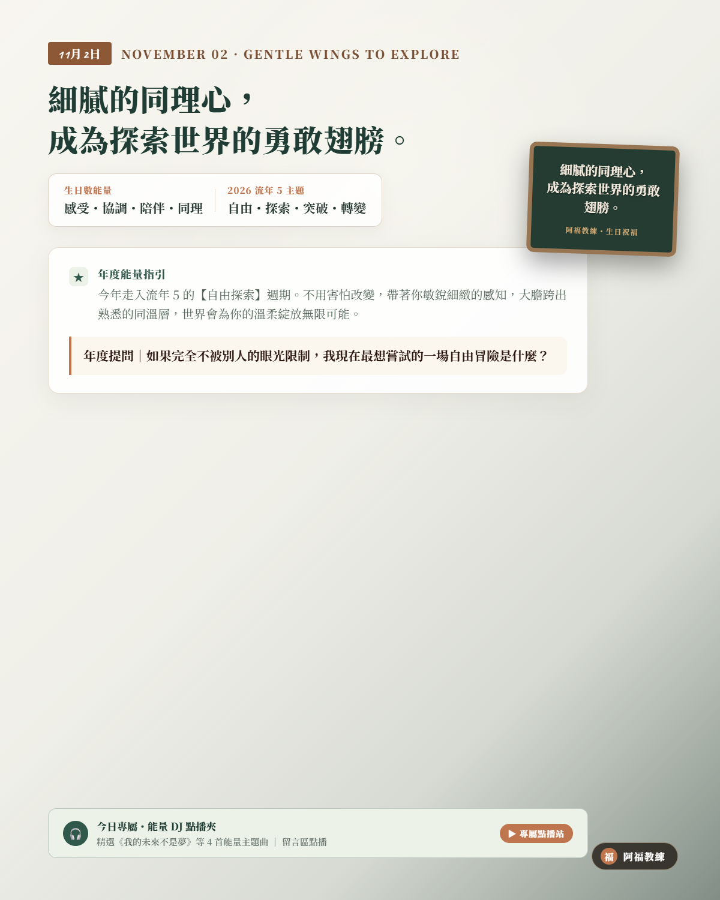

NOVEMBER 02 · GENTLE WINGS TO EXPLORE
11/02 壽星
生日快樂
「細膩的同理心，成為探索世界的勇敢翅膀。」
生日數 2（感受・協調・陪伴・同理）
2026 流年 5（自由・探索・突破・轉變）
生日數能量：感受・協調・陪伴・同理
流年 5 主題：自由・探索・突破・轉變
A YEAR OF SPECIAL MASTERY
跨出熟悉的同溫層，在世界遇見更豐富的自己
今年走入流年 5 的【自由探索】週期。你習慣顧及別人的感受、當最貼心的陪伴者，但今年宇宙要送給你一份特別的禮物——「允許自己去冒險」。不用害怕改變會失去秩序，帶著你敏銳細緻的感知，大膽嘗試未曾踏足的新領域、認識不同圈子的新朋友。世界會因為你的溫柔，為你綻放前所未見的遼闊風景！
年度提問｜「如果完全不被別人的眼光限制，我現在最想嘗試的一場自由冒險是什麼？」
YOUR ENERGY DJ · 2 號人的流年 5 能量點播站
當溫柔體貼的 2 號人，走進突破冒險的流年 5
身為天生善解人意的 2 號人，你的骨子裡總想先照顧好身邊人的情緒；然而今年走入「流年 5」的自由節奏，宇宙給你的課題不是繼續當乖巧的配角，而是勇敢跨出同溫層。當你的細膩遇上充滿變化的探索年份，容易因為猶豫與顧慮而裹足不前。今天 DJ 特別為 2 號人的你精選流年 5 自由歌單——接住你的不安、為你的溫柔插上翅膀，大膽飛向寬廣的新世界！
LIFE NUMBER 5 · CLASSROOM PLAYLIST
5 號人課堂激勵與歡唱歌單（給 2 號人的流年 5 自由歌單）
這份歌單來自阿福教練生命靈數課堂中，專為「跨出舒適圈、激發探索好奇與勇於突破」所調配的經典曲目。天生細膩溫柔的 2 號壽星，在面對流年 5 的探索週期時，聽這 8 首歌，就像為溫柔的心插上翱翔的翅膀——擺脫猶豫與顧慮，在廣闊天地中盡情擁抱無限可能！
- 01自由張震嶽｜主題開場・直接呼應自由與選擇，激勵大膽做出突破決定（YouTube 搜尋）
- 02離開地球表面五月天｜高能量帶動・以跳躍感拉高冒險熱情，打破沉悶框架（YouTube 搜尋）
- 03100種生活盧廣仲｜探索想像・思考人生的多種可能，放大細膩好奇心（YouTube 搜尋）
- 04你是我的花朵伍佰｜社交歡唱・熱情互動節奏，放大 2 號人的親和力與人際魅力（YouTube 搜尋）
- 05狂熱蘇打綠｜勇敢嘗試・將探索冒險導入熱情投入，享受全心投入的快感（YouTube 搜尋）
- 06快樂崇拜潘瑋柏｜節奏互動・輕鬆歡快的社交節奏，大膽表達自我與釋放活力（YouTube 搜尋）
- 07稻香周杰倫｜回到核心・提醒在自由探索之際，依然看見最純粹重要的初心（YouTube 搜尋）
- 08我的未來不是夢張雨生｜承諾收束・把探索體驗轉化為前進動力，堅定邁向精彩未來（YouTube 搜尋）
歌單依《生命靈數5號人_激勵九首與歡唱點播歌單》整理。點播連結均為 YouTube 官方影音搜尋結果；播放時請依授課場地與著作權規範使用。
願你的溫柔長出翅膀，在寬廣的探索中遇見更豐富精彩的自己。
👉 11/02 壽星快來留言【🕊️】！為新的一歲許下最棒的願望！
#11月2日生日快樂 #生命靈數 #生日數2 #流年5 #阿福教練